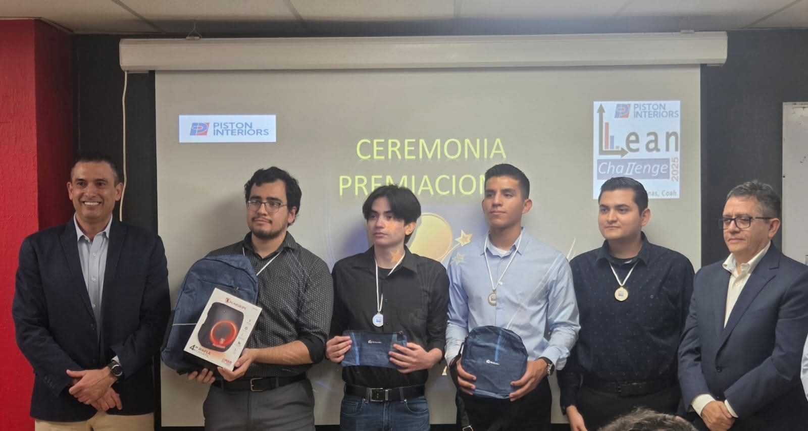
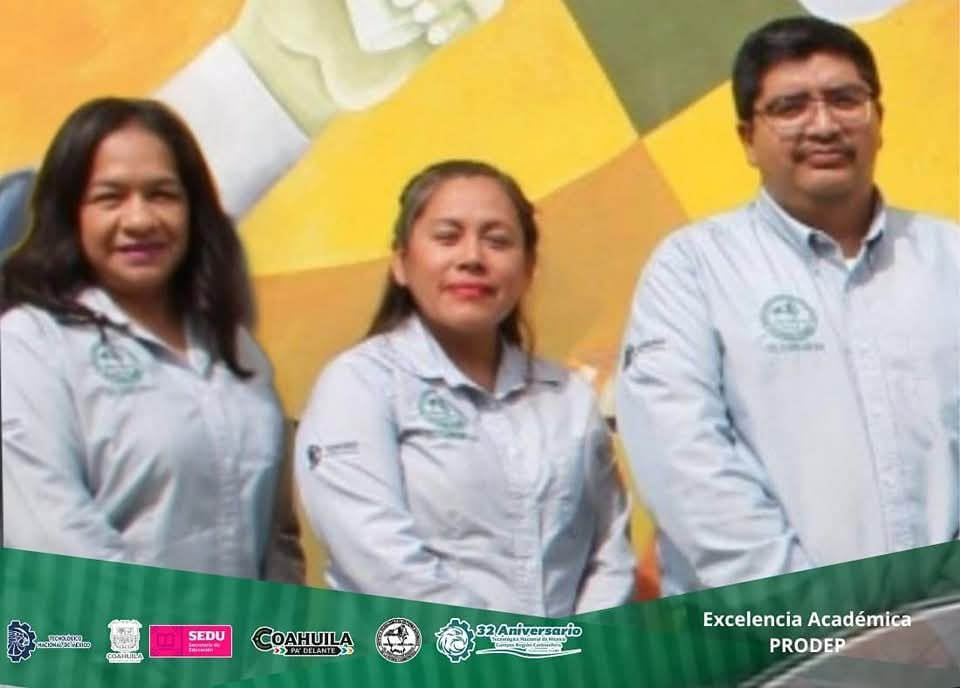
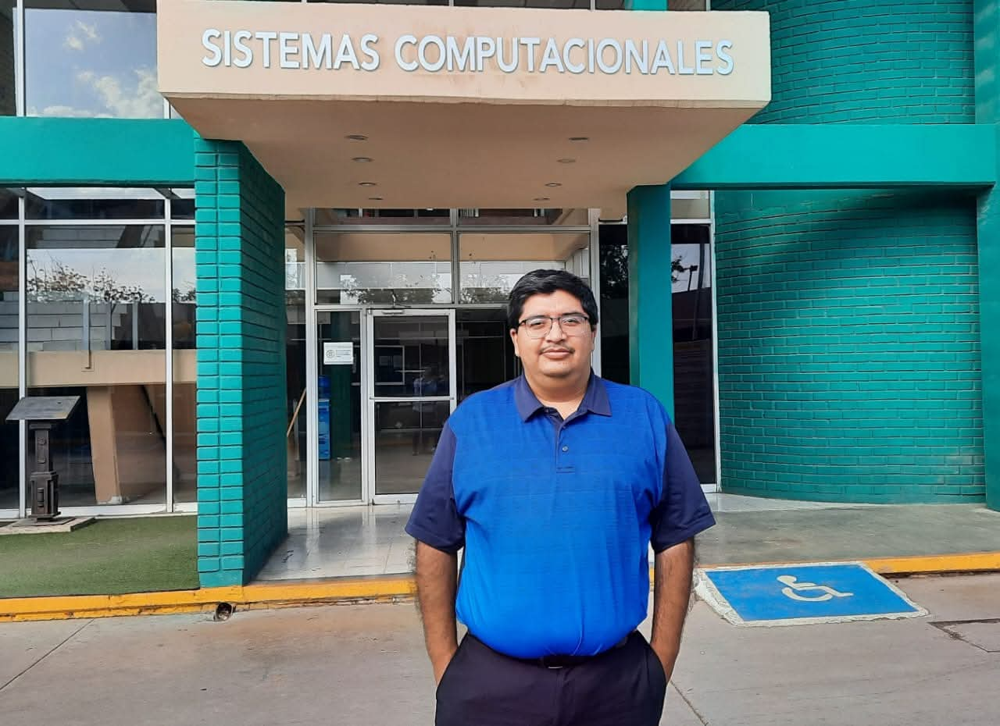
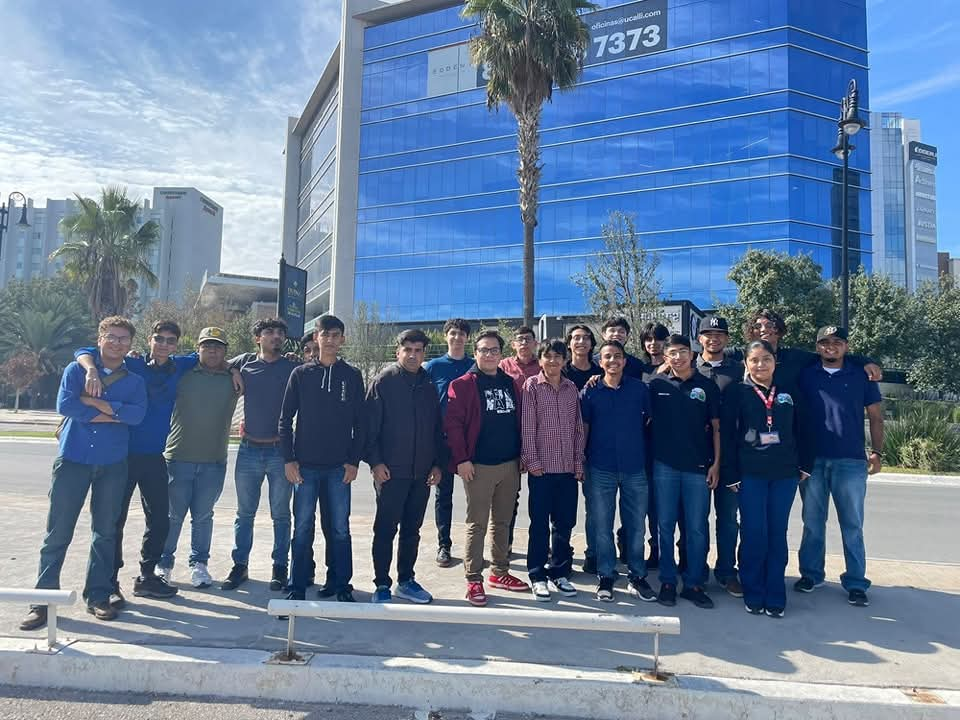
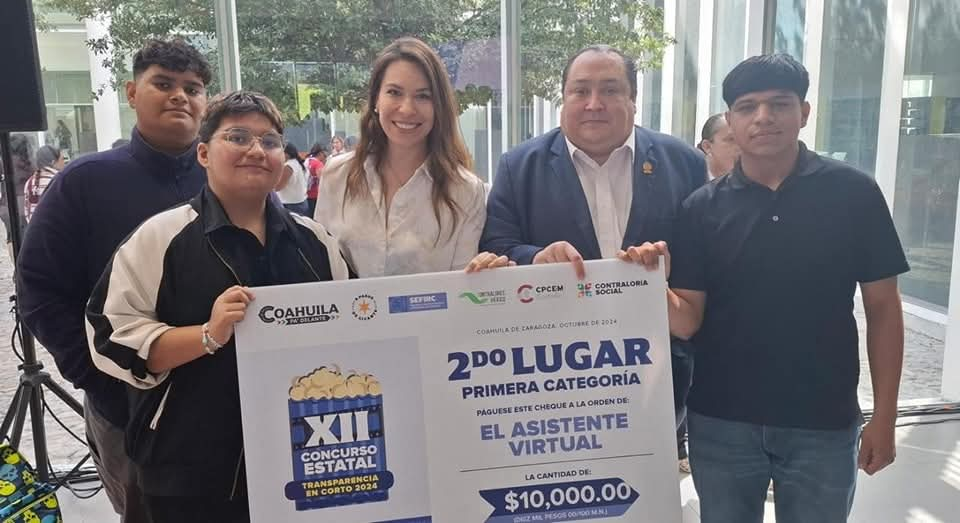
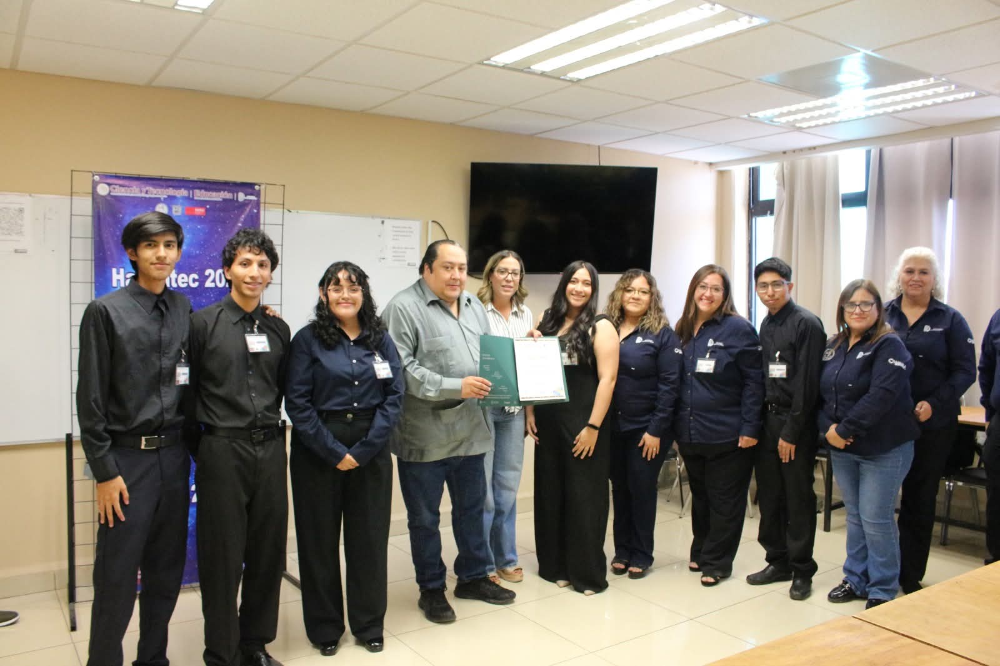

Felicitamos a nuestro alumno de noveno semestre Angel Alan Moreno Maldonado, quien representó con orgullo a nuestra carrera en el Lean Challenge 2025 de la empresa Irving Jaropamex Planta III Su participación demuestra el talento, la creatividad y el compromiso que caracteriza a nuestros estudiantes aplicando metodologías de mejora continua en entornos reales de la industria. Seguimos formando profesionales que transforman! 💻🚀 #ISC #TalentoTecNM #OrgulloramenteHalcones #sistemastecing

Tras haber concluido con el proceso de evaluación de las solicitudes presentadas en el marco del “Programa para el Desarrollo Profesional Docente” PRODEP, en la Convocatoria de Registro y Evaluación de Cuerpos Académicos del año 2023, se recibieron los resultados donde se informa que la propuesta enviada por docentes de nuestra Institución fue APROBADA, y se cuenta con un cuerpo académico en grado de formación, en el área de Ingeniería y Tecnología, de la disciplina de Ingeniería en Sistemas Computacionales, el nombre del Cuepo Académico es Desarrollo de Soluciones de Software, con una vigencia de 3 años, felicitamos a las y el Docente que con su trabajo y producción académica obtuvieron este logro: Mtro. Héctor Javier Padilla Lara, Mtra. Ernestina Leija Ramírez y Mtra. Adriana Ramírez Hernández. Cabe hacer mención que este es el segundo Cuerpo Académico con el que cuenta nuestra Institución en grado de formación. #TecNM #TecNMCampusRegiónCarbonífera #Halcones #TodosSomosTecNM

El 02 de abril, se recibió el registro de derechos del software "Sistemas de Generación de Horarios del ITESRC v2" por parte del Instituto Nacional del Derecho de Autor (INDAUTOR). El software fue desarrollado por el M.S.C. Héctor Javier Padilla Lara, distinguido Docente de la División Académica de Ingeniería en Sistemas Computacionales de nuestro Instituto. Este registro de derechos del software es un hecho significativo que refleja el esfuerzo y la dedicación de nuestro personal Docente en la creación y desarrollo de herramientas innovadoras para mejorar la calidad de la educación en el Tecnológico. Es un testimonio del compromiso continuo del cuerpo Docente con la excelencia académica y el avance tecnológico. Continuaremos apoyando y fomentando la investigación y el desarrollo de tecnología educativa en nuestro Instituto, reconociendo el valor y la importancia de iniciativas como esta para el crecimiento y la mejora continua del TecNM Región Carbonífera. Seguimos trabajando de manera colaborativa, coordinada y en equipo. #TecNM #TecNMRegiónCarbonifera #Halcones #TodosSomosTecNM

El pasado miércoles 23 de octubre se realizó una visita a la empresa Justia en la ciudad de Saltillo Coahuila, a la que acudieron estudiantes de tercer, quinto y séptimo semestre de la carrera de Ingeniería en Sistemas Computacionales. Durante la visita alumnas y alumnos pudieron observar las instalaciones y así mismo poder tener un acercamiento con Ingenieros expertos en ciber seguridad, infraestructura y front end, en donde les dieron a conocer experiencias personales con la finalidad de que el alumnado pueda observar la vida profesional y laboral de un Ingeniero en Sistemas Computacionales, además de compartirles consejos para fortalecer su quehacer académico, siempre en la búsqueda de la mejora continua, mediante certificaciones y dominio del idioma inglés como principal habilidad para asegurar el éxito profesional en este tipo de empresas. Las y los estudiantes se mostraron alegres y receptivos de conocer oportunidades laborales dentro de su área de experiencia. Seguimos trabajando de manera colaborativa, coordinada y en equipo. #TecNM #TecNMRegionCarbonifera #Halcones #SistemasComputacionales #SEDU #Justia

Estudiantes de la carrera de Ingeniería en Sistemas Computacionales del Tecnológico ganan segundo lugar en concurso estatal 2024 de cortometraje “Transparencia en Corto” con pase al nacional. El pasado 06 de septiembre de 2024, se llevó a cabo el concurso de Transparencia estatal de la Secretaria de Fiscalización y Rendición de Cuentas (SEFIRC) “Transparencia en Corto”, con el objetivo de brindar un espacio de expresión que promueva la participación activa de las y los jóvenes sobre el uso de las tecnologías de la información y su impacto en la cultura de la transparencia y rendición de cuentas, a través de un concurso de cortometrajes que busca impulsar su creatividad, interés e iniciativa. Nuestro Instituto participó con 20 cortometrajes, contribuyendo con ello a llevar a Coahuila a ser el cuarto lugar de participación a nivel nacional. En esta tercera ocasión de participación del Tecnológico de la Región Carbonífera, orgullosamente nuestros alumnos obtuvieron el segundo lugar en la categoría de 19 a 25 años con el cortometraje “Asistente virtual” y con pase a la Etapa Nacional a efectuarse el 31 de octubre del presente en Puebla. El cortometraje ganador corresponde a la y los alumnos: Viviana García García, Ángel Antonio Larrragaña Reyes y Alfredo Pérez Iñiguez y recibieron el premio acompañados por el Director de nuestro Instituto. #TecNM #TecNMRegiónCarbonífera #Halcones #SEDU #SEFIRC #subsecretariadeeducacionsuperior

Se realiza con éxito HackaTec 2026 – Etapa Local de InnovaTecNM 2026 Nuestra Institución llevó a cabo los días 27 y 28 de mayo el HackaTec 2026 Etapa Local, como parte de la Cumbre Nacional de Desarrollo Tecnológico, Emprendimiento e Innovación, InnovaTecNM 2026. Durante esta jornada se contó con la participación de dos equipos multidisciplinarios, quienes presentaron propuestas enfocadas en la solución de problemáticas actuales a través de la tecnología, la innovación y el trabajo colaborativo. Obteniendo el pase el equipo Hackapilones a la siguiente etapa Regional de InnovaTecNM 2026, la cual se llevará a cabo en el Tecnológico de Ciudad Madero, representando con orgullo a nuestra Institución.